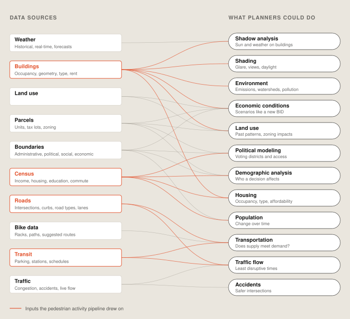
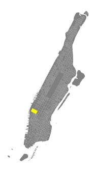
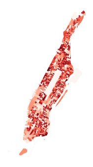
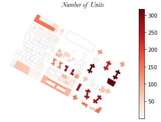
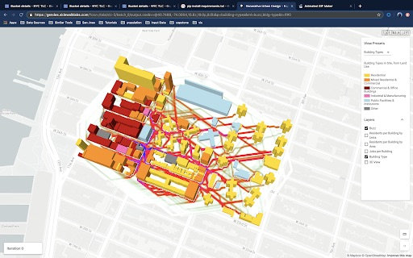
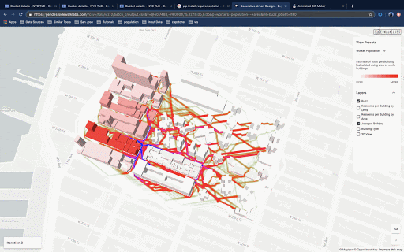

Estimating pedestrian activity
Generative design tools need good data about streets. This pipeline estimates street-level foot traffic from census data and feeds it straight in.

01Context
Generative design tools score thousands of building and street options against goals like walkability. To do that well, they need data about who is actually around a site.
Getting geospatial data into those tools was slow and manual, which kept them stuck on narrow test cases. The first step was research into which use cases mattered most, and which standard datasets, like pedestrian activity and transit access, they needed.

02Approach
An automated pipeline pulls the data in. Census population and workforce counts come in large areas called block groups, so the pipeline splits them down to individual buildings by size and use, then estimates how busy each street around them is.




03Outcome
Built on a test site in New York, then confirmed in other cities and over larger areas. Generative design could now draw on building-level population, workforce and land use, plus a “buzz metric” for pedestrian activity.

Beyond the Blue Dot

Say hello.
Working on something for the built environment? I’d love to hear about it.